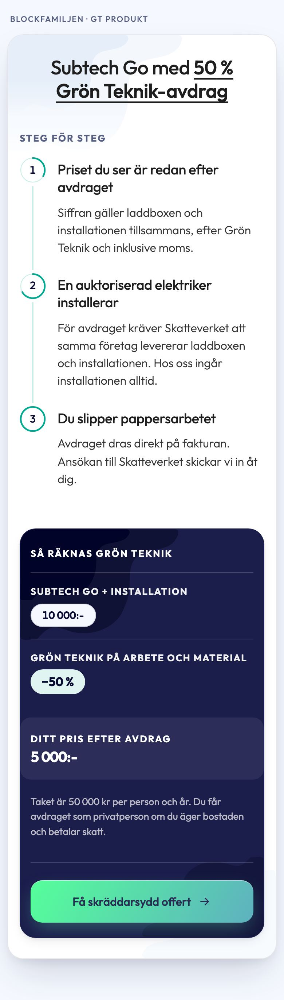

Tjänstesidans rytm
De 22 tjänstesidorna kör en kanonisk blocksekvens: heron, avdragsblocket i position 2, innehållet högt, sedan bevis, frågor och asken. Fyra asks i stället för tolv, ett betyg i stället för sex. Sektionernas luft, H2-regeln och fullbreddsregeln kommer från tokens och ägardirektiv.
Sekvensen: ~/Desktop/Ampy Tjanstesidor-analys/ULTIMATA-STRUKTUREN.md (levererad 2026-08-10, revision 2 2026-08-13 till 14) återgiven ur minnesnoten tjanstesidor-ultimata-strukturen.md; blocken: konsolidering/komponenter-karta.md; luften: system/tokens.css (spacing-roller). Prisblocket i den första sekvensen är struket av ägardirektivet 2026-08-13 ("inga priser på tjänstesidorna"); avdragsblocket tar dess plats.
Kanon-sekvensen (noll nya block)
Alla 22 sidor kör identisk 14-blockssekvens i dag med tolv asks; kanon behåller blocken men flyttar tre av dem och tar bort upprepningarna. Positionerna nedan är kanon per revision 2; luften till höger är sektionsavståndet i tokens vid 1440 och 390.
Asks: hero-CTA, avdragsblockets CTA, klass-slottens CTA, asken själv = fyra av konstruktion (bastemplaten §2b). Ett betyg (heron). Blocken renderade: Block.


Sektionernas luft, ur tokens
Sektion till sektion är en skala, inte ett tal per block. Tre steg täcker allt på en tjänstesida; mätt på live och i de levererade blocken (testimonials, visste-du-att, före/efter, footer, certifikat live = 2xl; certifikat v2, main-cta, elcentral-blockläge, var-process = xl; live-temats sektion = l).
| Roll | Token | 1440 | 390 | Används av |
|---|---|---|---|---|
| Sektion till sektion (standard) | --ampy-space-section-y = 2xl | 79,2 px | 34,8 px | testimonials, visste-du-att, före/efter, avdragsblocket, footerns mörka zon |
| Tät sektion (band med egen yta) | --ampy-space-xl | 56 px | 27,3 px | certifikat v2, CTA-bandet, prefooter, vår process, elcentral-blockläge |
| Sidoluft (gutter) | --ampy-gutter = l | 39,6 px | 21,5 px | alla band; heros kör 8 till 26 px runt ramen |
| Rubrikblock till innehåll | --ampy-space-stack-lg = l | 39,6 px | 21,5 px | testimonials head, före/efter H2, avdragsblockets H2 (44 = egen clamp) |
| Kort i band, rutnät | --ampy-space-gap = m | 28 px | 16,9 px | före/efter-paret, GT-grid, certifikat text till kort |
| Kortets inre luft | --ampy-space-card = m, -card-lg = l | 28 / 39,6 px | 16,9 / 21,5 px | testimonial-kort, samtalskort; resultatkort, vår process |
Rytmregeln inuti ett block (var-process v2, bokningen): 10 inom grupp, 20 och 28 mellan syskon, 40 och 56 mellan zoner, 80 i botten. Zon mot syskon cirka 2,0; botten cirka 1,5 gånger toppen. Ett block med 24 godtyckliga avstånd "ser ut som ett system och beter sig som en hög lokala beslut": det är signaturen för genererad kod.
H2-regeln per sektion
Varje block bär exakt en H2 och den är sektionens namn. Sidan har en H1 (heron). Eyebrow eller caps ovanför H2:n bär kategorin ("Steg för steg", "Visste du att"), aldrig informationen ensam (B19).
--ampy-text-h2 (26,8 på 390), beslut B17Startsidan kör i dag fem H2-storlekar (40/500, 40/600, 38/500, 36/400, 32/400). Kanon är en: 36 med vikt 500. Sektions-H2 med kicker ovanför bär hierarkin via eyebrown, inte via storleken. Live ROT/GT, före/efter och footerns h3 växer 32 till 36; CTA-bandet, vår process och temat krymper 40 till 36.
Blocket med en panel bredvid (familj C) ställer H2:n vänster över sin spalt; blocket som är ett band (familj D) centrerar. Avdragsblocket centrerar först under 900 px när spalterna staplas.
Fyra accentdevices för "sista orden i H2" finns i källorna. Kanon är understrykningen i textens egen färg (ägarorder 2026-08-16); gradientord är drift (gradienttext ogillas). Accenten sitter på förmånsfrasen sist i mallen "[jobb] med [sats] % [avdragsnamn]".
H2:n har ett mått och text-wrap: balance; en nowrap-accent släpps under 900 px så balanseringen fungerar (rag-fixen i D2).
Fullbreddsregeln
Ägardirektiv 2026-08-14: vitmarginalregeln är pensionerad. Nya block kör nära full bredd, med prejudikat i Hero-S, headern och testimonials. Container 1280 är innehållets bredd, inte ytans tak.
- Bandet (sky-mist, vit, midnight) går kant till kant; innehållet cappas på 1280 med gutter 39,6 (21,5 på mobil).
- Fullbreddskort (avdragsblocket, vår process) har 8-bas-kvantiserad padding i cqi och cappar innerlayouten på 1560 från 1497 px kortbredd, så spalterna slutar driva isär på 1920.
- Heros är ramar: 1700 (Hero-1) eller 1424 (Hero-2) med 8 till 26 px luft, radie 22 (18 mobil). Två ramskalor på samma sajt är dokumenterad drift.
- Kant i kant på mobil är tillåtet för kortet (vår process under 479: radie 0, sidopadding 0) men inte kanon; övriga block behåller 10 till 16 px.
- Breda tabeller, kodblock och exempel scrollar i sin egen ram; sidan scrollar aldrig i sidled.


Fas 0 före allt (öppna grindar)
- Mätning:
form_startmed flera; sajten emitterar nollform_starti dag. - Töm enterView på MainContact; bekräfta de två null-webhookarna (AMPY_LEAD_WEBHOOK, ECK lead_webhook_url): "Tack!" visas men leaden kastas.
- Fyra P0-antaganden väntar ägarsvar: telefonpreferensen (n = 2), "fast pris i offerten" osignerad, SEO-bevarandekravet, ROT som incitament på mikrojobb runt 450 kr.
- Riktningsval: vår process (A rekommenderad), footer (B rekommenderad), sticky call-barens hörn.
- A/B är omöjligt på mallen; beslut tas på mekanisk evidens och 28 dagars baslinje.